手順書は「自分で撮った写真6枚以内を、A4 の1ページに並べる」です。ページの数は変わらず、作品写真は1ページです。
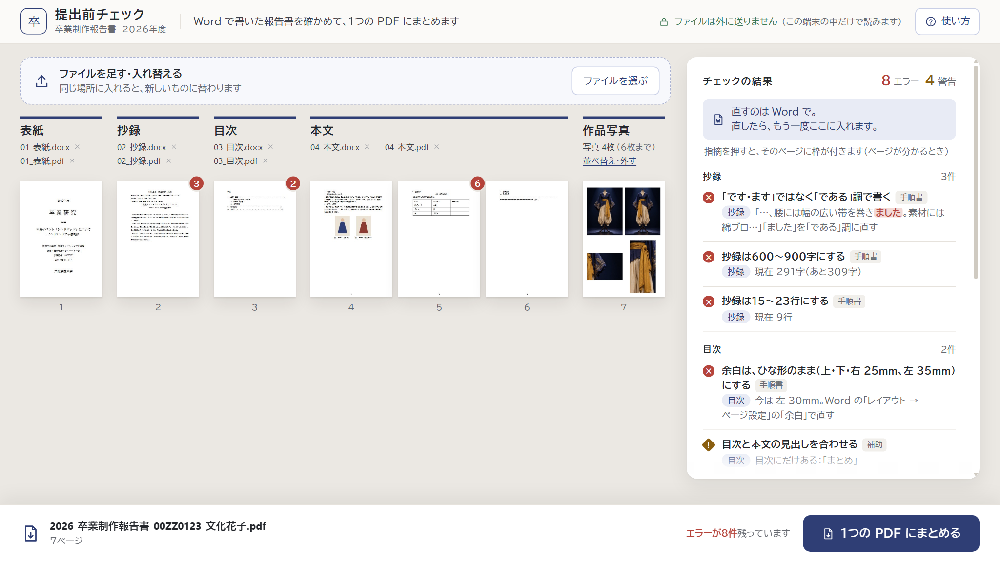
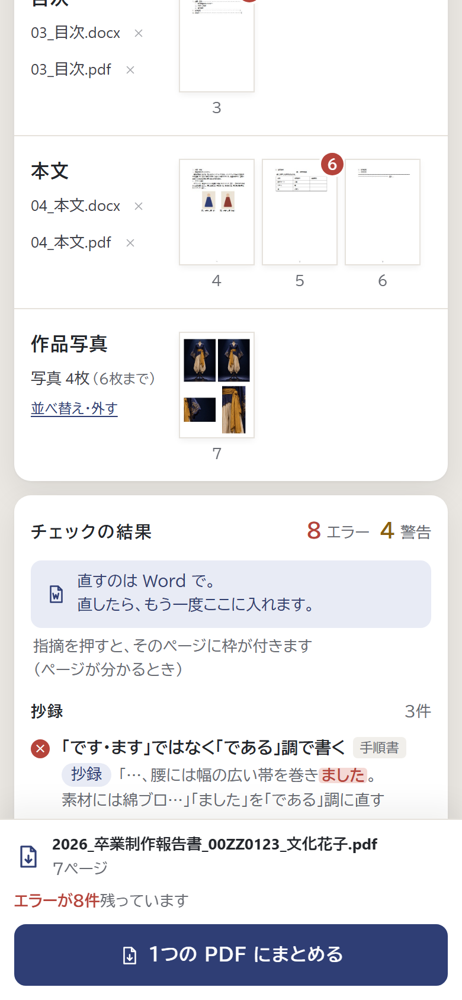
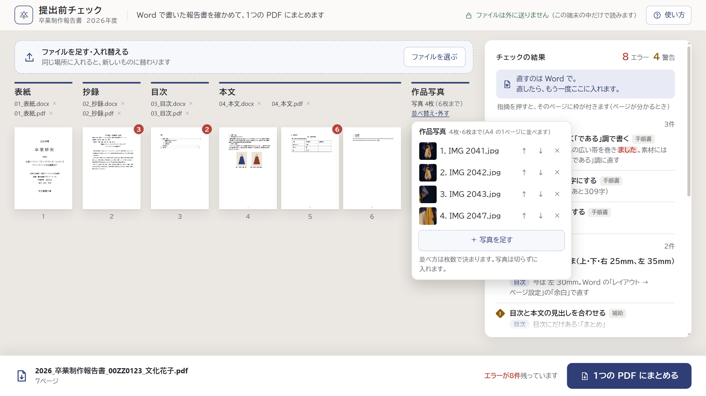
「並べ替え・外す」を押したところ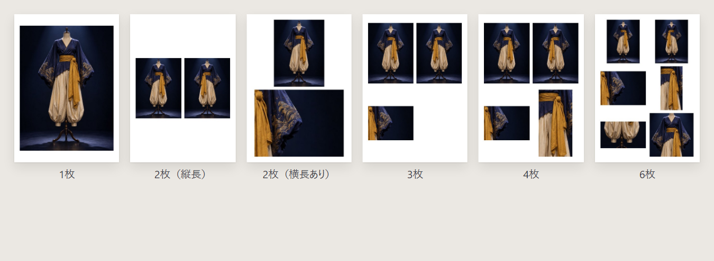
枚数ごとの並び方。2枚は写真の向きで、左右か上下になります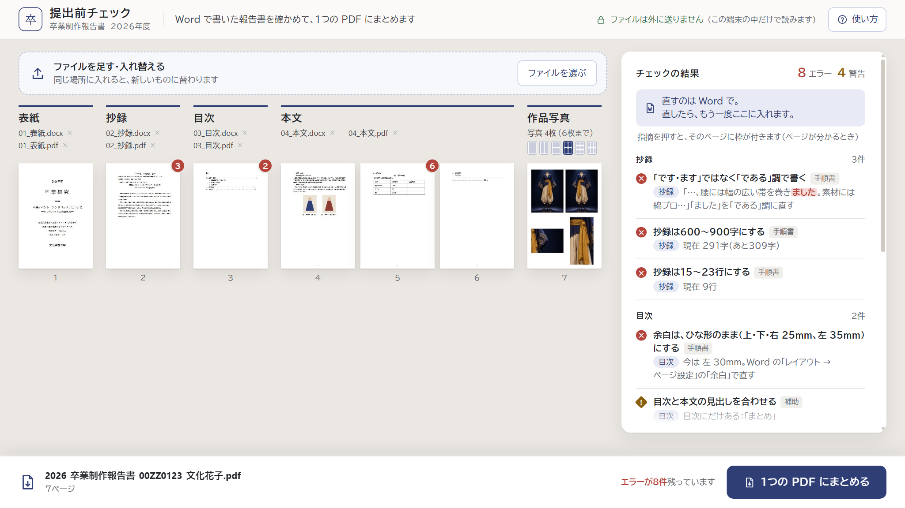
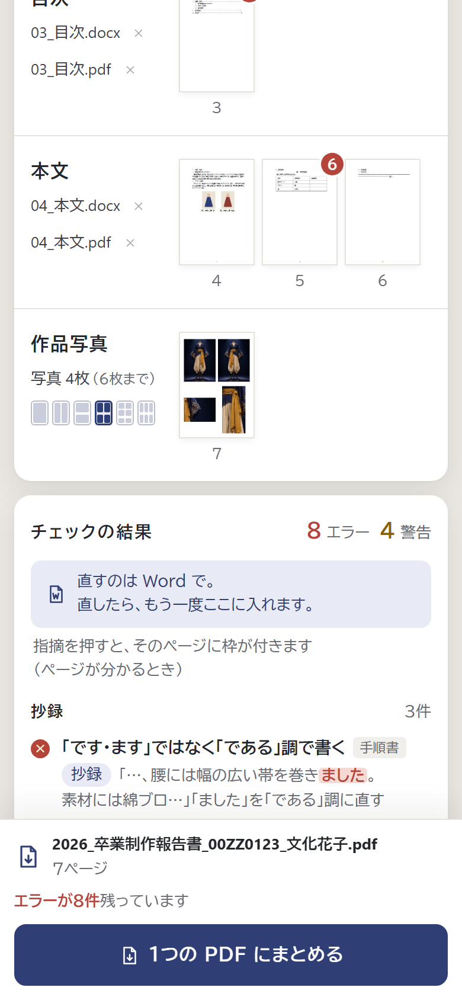
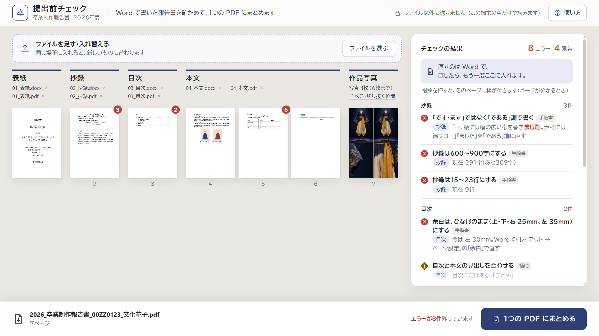
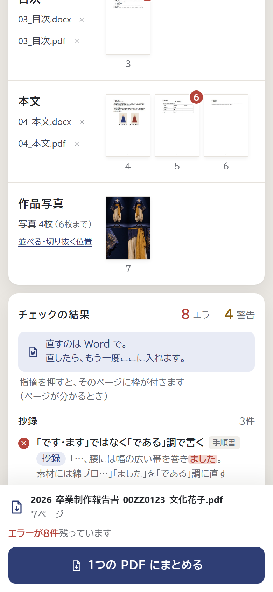
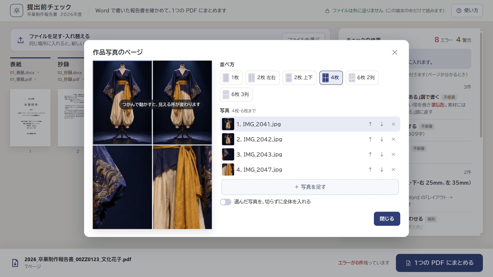
窓を開いたところ（写真をつかんで動かすと、見える所が変わる）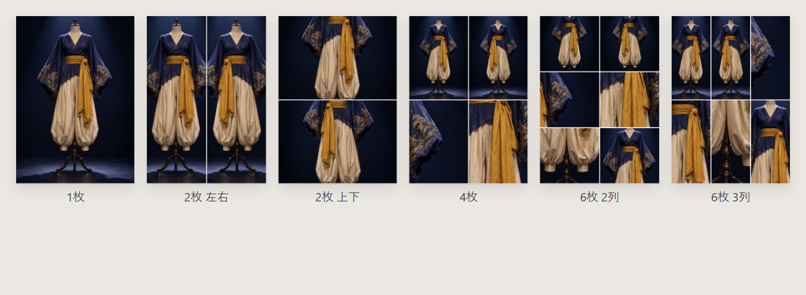
並べ方（作成ツールと同じ6通り）学生役から「押しても何も起きない」「エラーと警告のどちらを直すのか分からない」と出ました。
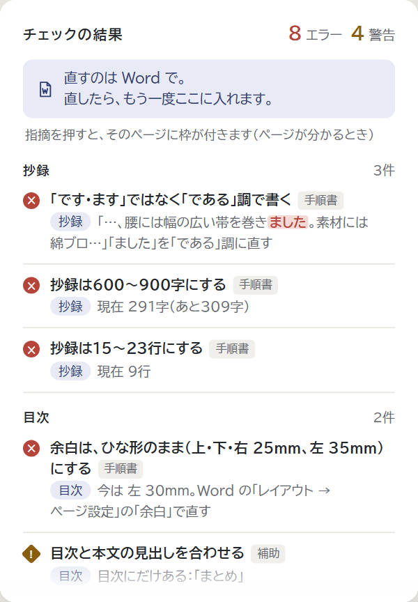
いま：札「手順書」「補助」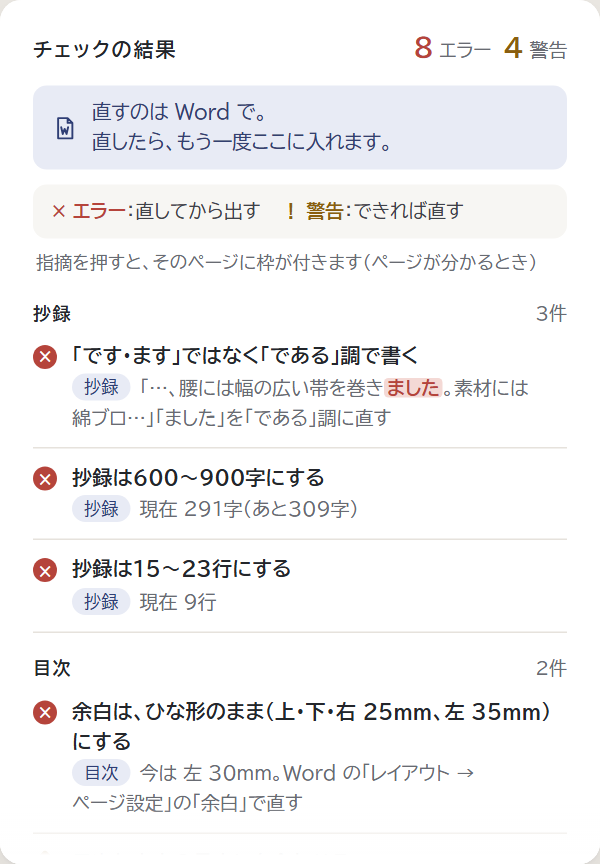
案1 札をなくし、意味を上に書くおすすめ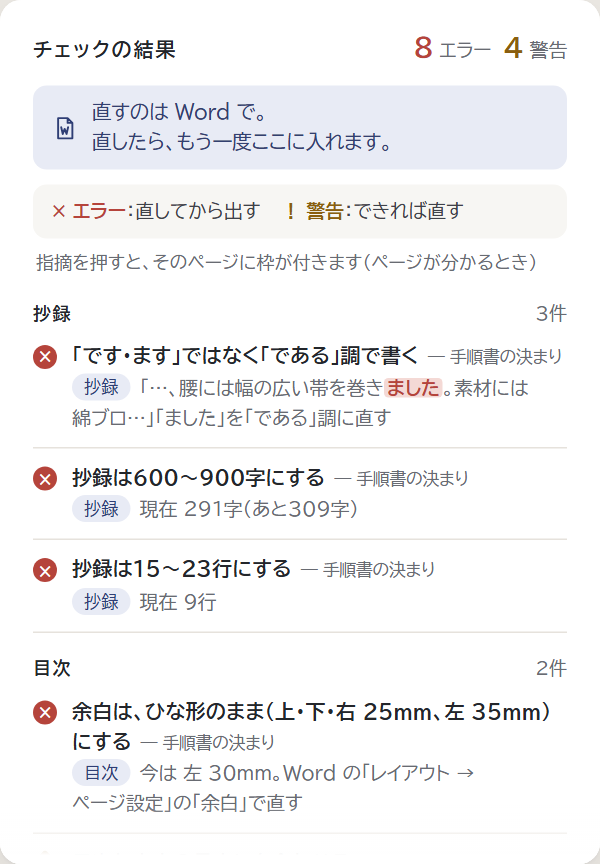
案2 札の言葉を変え、押せない形に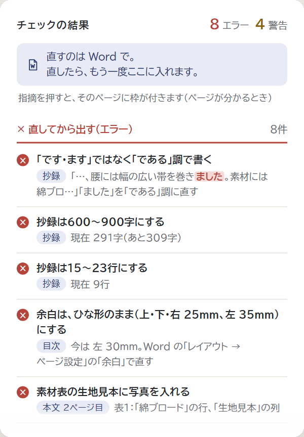
案3 「直してから出す」と「できれば直す」に分ける「01_表紙.docx」の見本を見て、名前を付け直すものと思った学生役がいました（実際はどんな名前でも分かれます）。
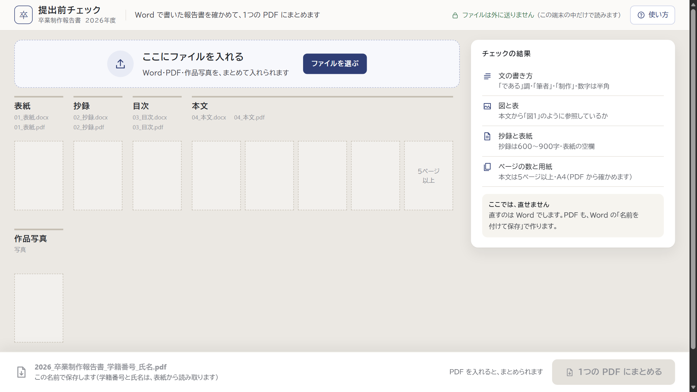
いま：見本の名前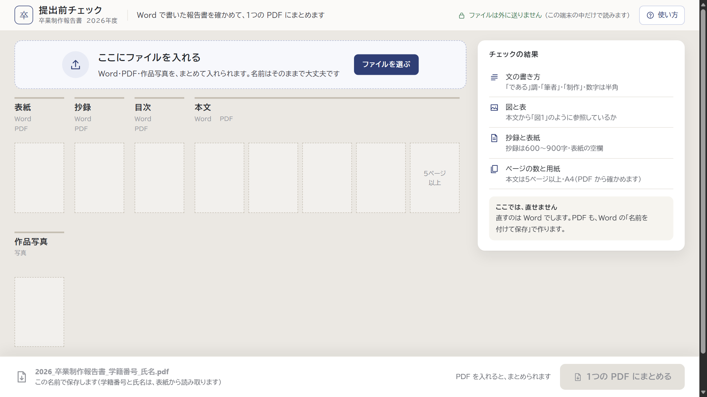
案1 「Word」「PDF」だけにするおすすめ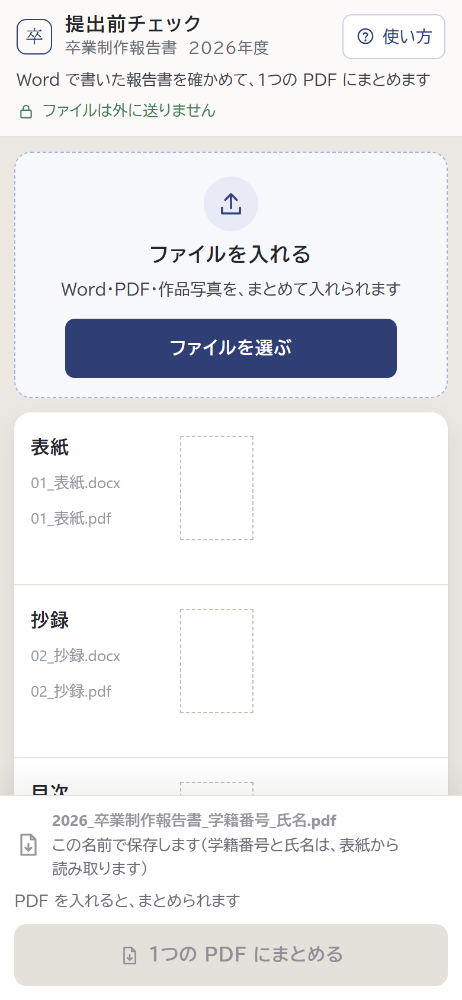
いま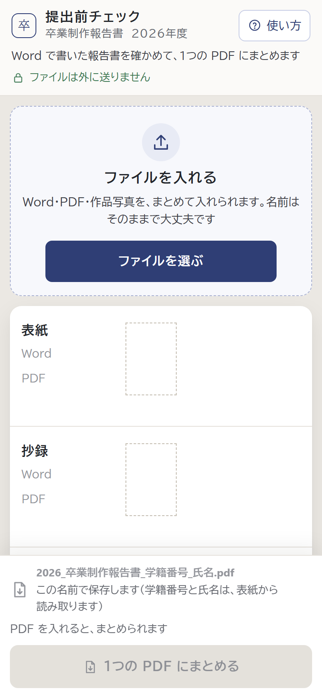
案1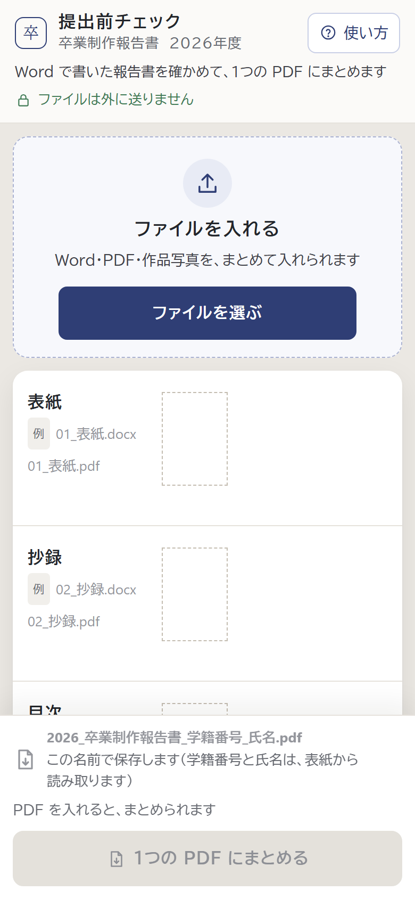
案2